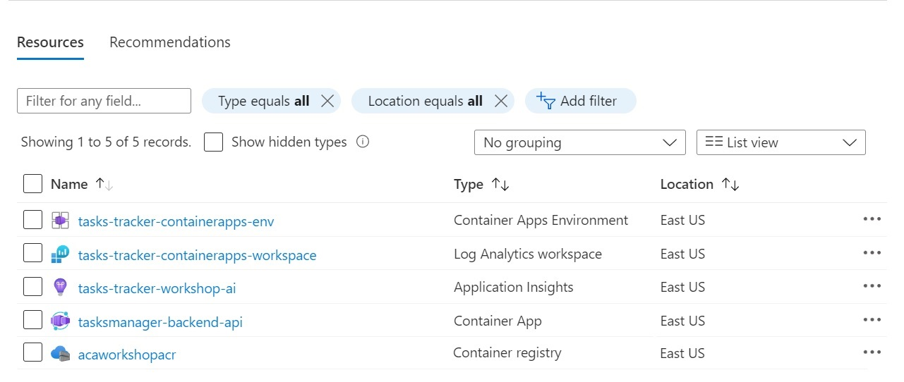

Module 1 - Deploy Backend API to ACA¶
In this module, we will start by creating the first microservice named ACA Web API – Backend as illustrated in the architecture diagram. Followed by that we will provision the Azure resources needed to deploy the service to Azure Container Apps using the Azure CLI.
{kind=link}
1. Create the backend API project (Web API)¶
-
Open a command-line terminal and create a folder for your project. Use the
codecommand to launch Visual Studio Code from that directory as shown: -
From VS Code Terminal tab, open developer command prompt or PowerShell terminal in the project folder
TasksTracker.ContainerAppsand initialize the project. This will create and ASP.NET Web API project scaffolded with a single controller. -
Next we need to containerize this application, so we can push it to Azure Container Registry as a docker image then deploy it to Azure Container Apps. Start by opening the VS Code Command Palette (Ctrl+Shift+P) and select
Docker: Add Docker Files to Workspace...- Use
.NET: ASP.NET Corewhen prompted for application platform. - Choose
Linuxwhen prompted to choose the operating system. - You will be asked if you want to add Docker Compose files. Select
No. - Take a note of the provided application port as we will pass it later on as the --target-port for the
az containerapp createcommand. Dockerfileand.dockerignorefiles are added to the workspace.
- Use
-
Add a new folder named
Modelsand create a new file with name below. These are the DTOs that will be used across the projects.
namespace TasksTracker.TasksManager.Backend.Api.Models
{
public class TaskModel
{
public Guid TaskId { get; set; }
public string TaskName { get; set; } = string.Empty;
public string TaskCreatedBy { get; set; } = string.Empty;
public DateTime TaskCreatedOn { get; set; }
public DateTime TaskDueDate { get; set; }
public string TaskAssignedTo { get; set; } = string.Empty;
public bool IsCompleted { get; set; }
public bool IsOverDue { get; set; }
}
public class TaskAddModel
{
public string TaskName { get; set; } = string.Empty;
public string TaskCreatedBy { get; set; } = string.Empty;
public DateTime TaskDueDate { get; set; }
public string TaskAssignedTo { get; set; } = string.Empty;
}
public class TaskUpdateModel
{
public Guid TaskId { get; set; }
public string TaskName { get; set; } = string.Empty;
public DateTime TaskDueDate { get; set; }
public string TaskAssignedTo { get; set; } = string.Empty;
}
}
- Create new folder named Services (make sure it is created at the same level as the models folder and not inside the models folder itself) and add new files as shown below. Add the Fake Tasks Manager service (In-memory), this will be the interface of Tasks Manager service. We will work initially with data in memory to keep things simple with very limited dependency on any other components or data store and focus on the deployment of the backend API to ACA. In the upcoming modules we will switch this implementation with a concrete data store where we are going to store data in Redis and Azure Cosmos DB using Dapr State Store building block
using TasksTracker.TasksManager.Backend.Api.Models;
namespace TasksTracker.TasksManager.Backend.Api.Services
{
public interface ITasksManager
{
Task<List<TaskModel>> GetTasksByCreator(string createdBy);
Task<TaskModel?> GetTaskById(Guid taskId);
Task<Guid> CreateNewTask(string taskName, string createdBy, string assignedTo, DateTime dueDate);
Task<bool> UpdateTask(Guid taskId, string taskName, string assignedTo, DateTime dueDate);
Task<bool> MarkTaskCompleted(Guid taskId);
Task<bool> DeleteTask(Guid taskId);
}
}
using TasksTracker.TasksManager.Backend.Api.Models;
namespace TasksTracker.TasksManager.Backend.Api.Services
{
public class FakeTasksManager : ITasksManager
{
private List<TaskModel> _tasksList = new List<TaskModel>();
Random rnd = new Random();
private void GenerateRandomTasks()
{
for (int i = 0; i < 10; i++)
{
var task = new TaskModel()
{
TaskId = Guid.NewGuid(),
TaskName = $"Task number: {i}",
TaskCreatedBy = "tjoudeh@bitoftech.net",
TaskCreatedOn = DateTime.UtcNow.AddMinutes(i),
TaskDueDate = DateTime.UtcNow.AddDays(i),
TaskAssignedTo = $"assignee{rnd.Next(50)}@mail.com",
};
_tasksList.Add(task);
}
}
public FakeTasksManager()
{
GenerateRandomTasks();
}
public Task<Guid> CreateNewTask(string taskName, string createdBy, string assignedTo, DateTime dueDate)
{
var task = new TaskModel()
{
TaskId = Guid.NewGuid(),
TaskName = taskName,
TaskCreatedBy = createdBy,
TaskCreatedOn = DateTime.UtcNow,
TaskDueDate = dueDate,
TaskAssignedTo = assignedTo,
};
_tasksList.Add(task);
return Task.FromResult(task.TaskId);
}
public Task<bool> DeleteTask(Guid taskId)
{
var task = _tasksList.FirstOrDefault(t => t.TaskId.Equals(taskId));
if (task != null)
{
_tasksList.Remove(task);
return Task.FromResult(true);
}
return Task.FromResult(false);
}
public Task<TaskModel?> GetTaskById(Guid taskId)
{
var taskModel = _tasksList.FirstOrDefault(t => t.TaskId.Equals(taskId));
return Task.FromResult(taskModel);
}
public Task<List<TaskModel>> GetTasksByCreator(string createdBy)
{
var tasksList = _tasksList.Where(t => t.TaskCreatedBy.Equals(createdBy)).OrderByDescending(o => o.TaskCreatedOn).ToList();
return Task.FromResult(tasksList);
}
public Task<bool> MarkTaskCompleted(Guid taskId)
{
var task = _tasksList.FirstOrDefault(t => t.TaskId.Equals(taskId));
if (task != null)
{
task.IsCompleted = true;
return Task.FromResult(true);
}
return Task.FromResult(false);
}
public Task<bool> UpdateTask(Guid taskId, string taskName, string assignedTo, DateTime dueDate)
{
var task = _tasksList.FirstOrDefault(t => t.TaskId.Equals(taskId));
if (task != null)
{
task.TaskName = taskName;
task.TaskAssignedTo = assignedTo;
task.TaskDueDate = dueDate;
return Task.FromResult(true);
}
return Task.FromResult(false);
}
}
}
- Now we need to register FakeTasksManager on project startup. Open file
Program.csand register the newly created service by adding the highlighted lines from below snippet. Don't forget to include the required using statements for the task interface and class.
- Add a new controller under the
Controllersfolder with name below. We need to create API endpoints to manage tasks.
using Microsoft.AspNetCore.Mvc;
using TasksTracker.TasksManager.Backend.Api.Models;
using TasksTracker.TasksManager.Backend.Api.Services;
namespace TasksTracker.TasksManager.Backend.Api.Controllers
{
[Route("api/tasks")]
[ApiController]
public class TasksController : ControllerBase
{
private readonly ILogger<TasksController> _logger;
private readonly ITasksManager _tasksManager;
public TasksController(ILogger<TasksController> logger, ITasksManager tasksManager)
{
_logger = logger;
_tasksManager = tasksManager;
}
[HttpGet]
public async Task<IEnumerable<TaskModel>> Get(string createdBy)
{
return await _tasksManager.GetTasksByCreator(createdBy);
}
[HttpGet("{taskId}")]
public async Task<IActionResult> GetTask(Guid taskId)
{
var task = await _tasksManager.GetTaskById(taskId);
if (task != null)
{
return Ok(task);
}
return NotFound();
}
[HttpPost]
public async Task<IActionResult> Post([FromBody] TaskAddModel taskAddModel)
{
var taskId = await _tasksManager.CreateNewTask(taskAddModel.TaskName,
taskAddModel.TaskCreatedBy,
taskAddModel.TaskAssignedTo,
taskAddModel.TaskDueDate);
return Created($"/api/tasks/{taskId}", null);
}
[HttpPut("{taskId}")]
public async Task<IActionResult> Put(Guid taskId, [FromBody] TaskUpdateModel taskUpdateModel)
{
var updated = await _tasksManager.UpdateTask(taskId,
taskUpdateModel.TaskName,
taskUpdateModel.TaskAssignedTo,
taskUpdateModel.TaskDueDate);
if (updated)
{
return Ok();
}
return BadRequest();
}
[HttpPut("{taskId}/markcomplete")]
public async Task<IActionResult> MarkComplete(Guid taskId)
{
var updated = await _tasksManager.MarkTaskCompleted(taskId);
if (updated)
{
return Ok();
}
return BadRequest();
}
[HttpDelete("{taskId}")]
public async Task<IActionResult> Delete(Guid taskId)
{
var deleted = await _tasksManager.DeleteTask(taskId);
if (deleted)
{
return Ok();
}
return NotFound();
}
}
}
- From VS Code Terminal tab, open developer command prompt or PowerShell terminal and navigate to the parent directory which hosts the
.csprojproject folder and build the project. Make sure that the build is successful and that there are no build errors. Usually you should see a "Build succeeded" message in the terminal upon a successful build.
2. Deploy Web API Backend Project to ACA¶
We will be using Azure CLI to deploy the Web API Backend to ACA as shown in the following steps:
-
We will start with Installing/Upgrading the Azure Container Apps Extension.
-
Define the variables below in the PowerShell console to use them across the different modules in the workshop. You should change the values of those variables to be able to create the resources successfully. Some of those variables should be unique across all Azure subscriptions such as Azure Container Registry name. Remember to replace the place holders with your own values:
$RESOURCE_GROUP="tasks-tracker-rg" $LOCATION="eastus" $ENVIRONMENT="tasks-tracker-containerapps-env" $WORKSPACE_NAME="<replace this with your unique app log analytics workspace name>" $APPINSIGHTS_NAME="<replace this with your unique app insights name>" $BACKEND_API_NAME="tasksmanager-backend-api" $ACR_NAME="<replace this with your unique acr name>" -
Create a
resource groupto organize the services related to the application, run the below command: -
Create an Azure Container Registry (ACR) instance in the resource group to store images of all Microservices we are going to build during this workshop. Make sure that you set the
admin-enabledflag to true in order to seamlessly authenticate the Azure container app when trying to create the container app using the image stored in ACR
Note
Notice that we create the registry with admin rights --admin-enabled flag set to true which is not suited for real production, but good for our workshop.
- Create an Azure Log Analytics Workspace which will provide a common place to store the system and application log data from all container apps running in the environment. Each environment should have its own Log Analytics Workspace. To create it, run the command below:
# create the log analytics workspace az monitor log-analytics workspace create ` --resource-group $RESOURCE_GROUP ` --workspace-name $WORKSPACE_NAME # retrieve workspace ID $WORKSPACE_ID=az monitor log-analytics workspace show --query customerId ` -g $RESOURCE_GROUP ` -n $WORKSPACE_NAME -o tsv # retrieve workspace secret $WORKSPACE_SECRET=az monitor log-analytics workspace get-shared-keys --query primarySharedKey ` -g $RESOURCE_GROUP ` -n $WORKSPACE_NAME -o tsv -
Create an Application Insights Instance which will be used mainly for distributed tracing between different container apps within the ACA environment to provide searching for and visualizing an end-to-end flow of a given execution or transaction. To create it, run the command below:
# Install the application-insights extension for the CLI az extension add -n application-insights # Create application-insights instance az monitor app-insights component create ` -g $RESOURCE_GROUP ` -l $LOCATION ` --app $APPINSIGHTS_NAME ` --workspace $WORKSPACE_NAME # Get Application Insights Instrumentation Key $APPINSIGHTS_INSTRUMENTATIONKEY=($(az monitor app-insights component show ` --app $APPINSIGHTS_NAME ` -g $RESOURCE_GROUP) | ConvertFrom-Json).instrumentationKey -
Now we will create an Azure Container Apps Environment. As a reminder of the different ACA component check this link in the workshop introduction. The ACA environment acts as a secure boundary around a group of container apps that we are going to provision during this workshop. To create it, run the below command:
Want to learn what above command does?
- It creates an ACA environment and associates it with the Log Analytics Workspace created in the previous step.
- We are setting the
--dapr-instrumentation-keyvalue to the instrumentation key of the Application Insights instance. This will come handy when we introduce Dapr in later modules and show how the distributed tracing between microservices/container apps are captured and visualized in Application Insights.NOTE: You can set the
--dapr-instrumentation-keyafter you create the ACA environment but this is not possible via the AZ CLI right now. There is an open issue which is being tracked by the product group.
-
Build the Web API project on ACR and push the docker image to ACR. Use the below command to initiate the image build and push process using ACR. The
.at the end of the command represents the docker build context, in our case, we need to be on the parent directory which hosts the.csproj.Once this step is completed you can verify the results by going to the Azure portal and checking that a new repository namedcd {YourLocalPath}\TasksTracker.ContainerApps az acr build --registry $ACR_NAME --image "tasksmanager/$BACKEND_API_NAME" --file 'TasksTracker.TasksManager.Backend.Api/Dockerfile' .tasksmanager/tasksmanager-backend-apihas been created and there is a new docker image with alatesttag is created. -
The last step here is to create and deploy the Web API to ACA following the below command. Remember to replace the place holders with your own values:
az containerapp create ` --name $BACKEND_API_NAME ` --resource-group $RESOURCE_GROUP ` --environment $ENVIRONMENT ` --image "$ACR_NAME.azurecr.io/tasksmanager/$BACKEND_API_NAME" ` --registry-server "$ACR_NAME.azurecr.io" ` --target-port [port number that was generated when you created your docker file in vs code] ` --ingress 'external' ` --min-replicas 1 ` --max-replicas 1 ` --cpu 0.25 --memory 0.5Gi ` --query configuration.ingress.fqdn
Want to learn what above command does?
- Ingress param is set to
externalwhich means that this container app (Web API) project will be accessible from the public internet. When Ingress is set toInternalorExternalit will be assigned a fully qualified domain name (FQDN). Important notes about IP addresses and domain names can be found here. - The target port param is set to 80, this is the port our Web API container listens to for incoming requests.
- We didn't specify the ACR registry username and password,
az containerapp createcommand was able to look up ACR username and password and add them as a secret under the created Azure container app for future container updates. - The minimum and the maximum number of replicas are set. More about this when we cover Autoscaling in later modules. For the time being, only a single instance of this container app will be provisioned as Auto scale is not configured.
- We set the size of the Container App. The total amount of CPUs and memory requested for the container app must add up to certain combinations, for full details check the link here.
- The
queryproperty will filter the response coming from the command and just return the FQDN. Take note of this FQDN as you will need it for the next step.
For full details on all available parameters for this command, please visit this page.
- You can now verify the deployment of the first ACA by navigating to the Azure Portal and selecting the resource group named
tasks-tracker-rgthat you created earlier. You should see the 5 recourses created below. 
{kind=link}
Success
To test the backend api service, copy the FQDN (Application URL) of the Azure container app named tasksmanager-backend-api.
Issue a GET request similar to this one: https://tasksmanager-backend-api.<your-aca-env-unique-id>.eastus.azurecontainerapps.io/api/tasks/?createdby=tjoudeh@bitoftech.net and you should receive an array of the 10 tasks similar to the below image.
Tip
You can find your azure container app application url on the azure portal overview tab.

In the next module, we will see how we will add a new Frontend Web App as a microservice and how it will communicate with the backend API.